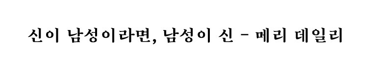
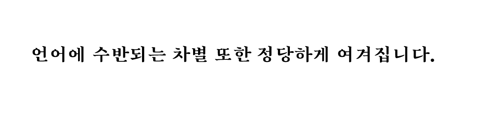

언어에 대한 조종과 통제에 의해
우리의 생각과 행동은 움직여집니다.
이것을 우리는 언어의 정치성
이라고 부릅니다.
리틀 시스터즈의 방법론은
권력자들이 사용하는 언어적 규칙들을
정치적이고 창의적으로 유희하고,
대안의 언어를 창조합니다.
재호명
재정의
재명명
실제하는
언어적 유토피아,
우리의 실존하는 장소, 그
헤테로토피아에 도달하기 위한
언어적 유토피아,
우리의 실존하는 장소, 그
헤테로토피아에 도달하기 위한

처음에
세상에는 언어가 하나뿐이어서,
모두가 같은 말을 썼다.
근원의 세계에는
말이 세상을 창조하고
작명은 존재를 책임졌다.
세상에는 언어가 하나뿐이어서,
모두가 같은 말을 썼다.
근원의 세계에는
말이 세상을 창조하고
작명은 존재를 책임졌다.
언술^객체에서
언술^주체로
언술^주체로
지배-종속에서
평등-화합으로
평등-화합으로
축소·제한에서
창조·확장으로
창조·확장으로
리틀 시스터즈 언어창조회는 조지 오웰
(George Orwell)의 소설 『1984』(1949)에
등장하는 전체주의 권력집단 빅 브라더와 대조되는 이름입니다.
소설 속 빅브라더
가 만들어내는 신
어(新語,
Newspeak)가 권력을 통해
억압을 강화한다면,
리틀 시스터즈의 언어는
언어의 권력 불평등을 해소함으로써
기존 권력에
저항하는 것을 목표로 합니다.
빅 브라더의 언어는 관료적이고 하향식이며
권위적이지만,
리틀 시스터즈의 언어는 창조적이고
상향식이며 저항적입니다.
(George Orwell)의 소설 『1984』(1949)에
등장하는 전체주의 권력집단 빅 브라더와 대조되는 이름입니다.
소설 속 빅브라더
가 만들어내는 신
어(新語,
Newspeak)가 권력을 통해
억압을 강화한다면,
리틀 시스터즈의 언어는
언어의 권력 불평등을 해소함으로써
기존 권력에
저항하는 것을 목표로 합니다.
빅 브라더의 언어는 관료적이고 하향식이며
권위적이지만,
리틀 시스터즈의 언어는 창조적이고
상향식이며 저항적입니다.
하지만 오만은
관계를 타락시키고
존재는 언어에 의해 오염되었다.
관계를 타락시키고
존재는 언어에 의해 오염되었다.
존재
언어
사고
연대
창조
평등


LSLCC는
타인에 대한 착취를
정당화하는 가부장적 이념에 따라
자행되는 모든 차별과
계층 간의 착취와
종말을 향해가는 환경 파괴는
유토피아적 창조의 원리를 배반합니다.
타인에 대한 착취를
정당화하는 가부장적 이념에 따라
자행되는 모든 차별과
계층 간의 착취와
종말을 향해가는 환경 파괴는
유토피아적 창조의 원리를 배반합니다.
차별적 언어는 대상에 대해
편향된 인식을 심어주거나 암시하며,
폭력적인 진부한
표현을 재생산합니다.
편향된 인식을 심어주거나 암시하며,
폭력적인 진부한
표현을 재생산합니다.

모두가 다른 언어를 쓰게 되고
철저히 번역 불가능한
타자를 마주한다.
철저히 번역 불가능한
타자를 마주한다.
누군가가 무언가에
붙인 이름은
세상에 대한 그의 인식을
반영합니다.
리틀 시스터즈는
새로운 언어로
스스로를 호명하며
명명되는
객체에서
명명하는
주체가 됩니다.
붙인 이름은
세상에 대한 그의 인식을
반영합니다.
리틀 시스터즈는
새로운 언어로
스스로를 호명하며
명명되는
객체에서
명명하는
주체가 됩니다.
새로운 언어는
풍부한 상상력으로 행간을 읽어가며,
다정한 말과 모욕하는 말을
구별할 줄 알며,
때에 따라 친근하고 이해
하기 쉬운 언어로 번역합니다.
풍부한 상상력으로 행간을 읽어가며,
다정한 말과 모욕하는 말을
구별할 줄 알며,
때에 따라 친근하고 이해
하기 쉬운 언어로 번역합니다.
단 하나의 언어 안에서
모두가 다르지 않고 하나이며
말은
침묵 중에도
선하다.
모두가 다르지 않고 하나이며
말은
침묵 중에도
선하다.